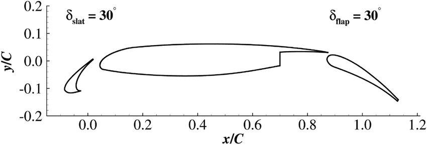
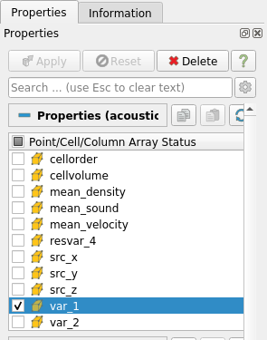
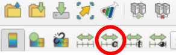
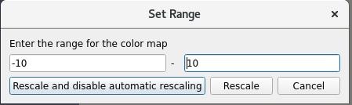
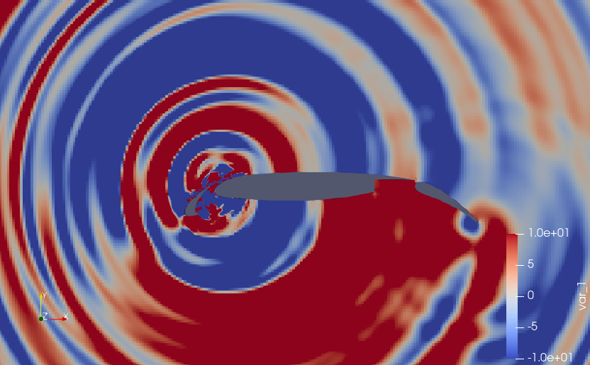
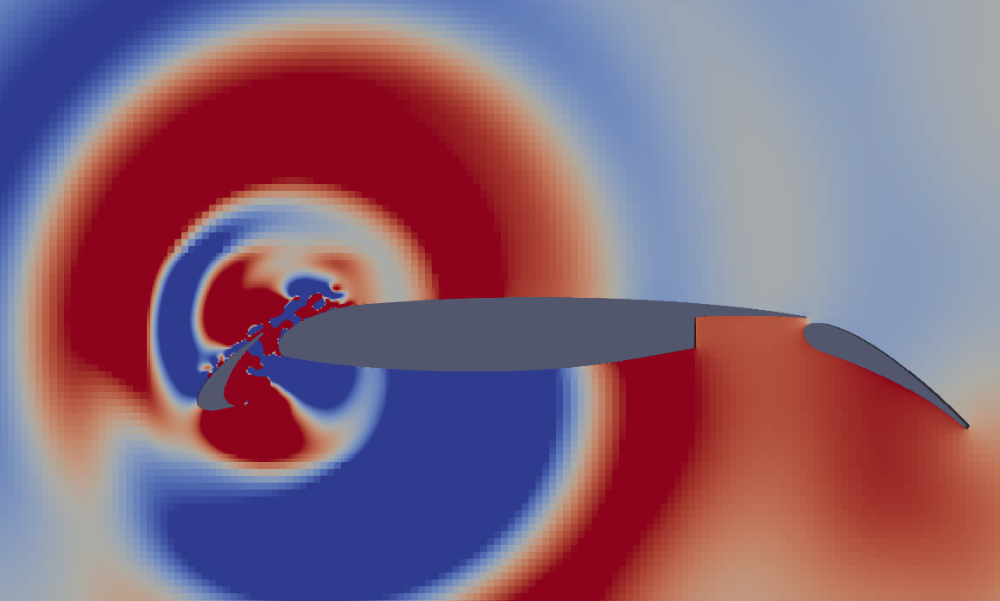
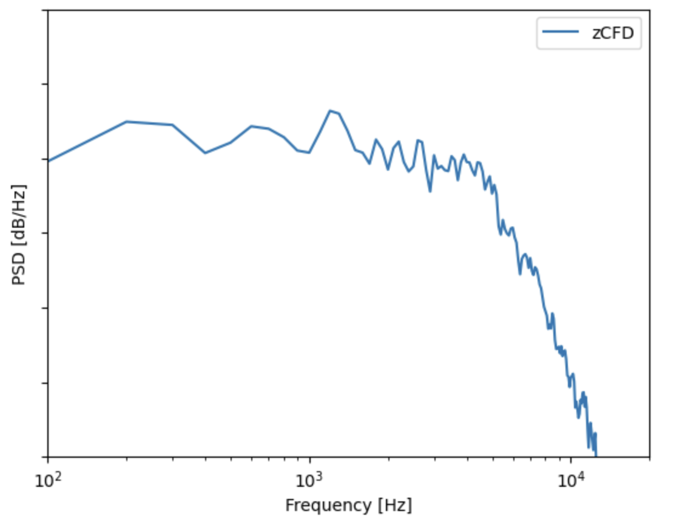

Tutorial 4: Aero-acoustics¶
In Tutorial 2, we learnt how to run a steady state RANS simulation for the flow over the 2D 30P30N multi-element aerofoil geometry. In this tutorial, we will use the steady state RANS simulation to perform a broadband aero-acoustic simulation using the Fast Random Particle Mesh (FRPM) stochastic noise method. The geometry of this case is as in Tutorial 2 and can be seen below:
As we have already generated the full steady state RANS solution in Tutorial 2, we will begin by creating our aero-acoustic mesh, on which we will solve the Acoustic Perturbation Equations using a high order DG method. To start, we will load the wall boundary solution into Paraview and export it in STL format.
Aero-acoustic mesh generation¶
To generate the aero-acoustic mesh we will do the following:
Use Paraview to extract the wall boundary from the zCFD result generated in tutorial 2 and export it as STL.
Generate an acoustic mesh based on the wall STL using zM3.
1. Export STL with Paraview¶
Firstly, open the file in Paraview. The procedure to load the file is:
File > Open
then select the 30p30n_steady_wall.pvd file in the OUTPUT directory from the steady state zCFD simulation you ran in tutorial 2. In the ‘Properties’ dialog box in the bottom left of the screen, deselect any field variables as these will not be required. As we will be saving the data in STL format, we must triangulate the boundary. To do this select:
Filters > Alphabetical > Triangulate
Finally, we need to save the file in STL format, to do this:
File > Save Data
and name the file as wall.stl (change file to STL). Save the file as Binary format.
2. Create mesh with zM3¶
To generate the acoustic mesh we run the zm3 mesh generator. zM3 will create a cartesian mesh and embed the STL file to represent the geometry and as a source of refinement. As this mesh generator is currently command line based, the commands to generate a suitable acoustic mesh is as follows:
# Source the zCFD environment
source <PATH_TO_ZCFD>/bin/activate
zm3 \
--meshName acoustic.h5 \
--base -2 -2 0.5 \
--dims 4 4 0.005 \
--globalSpacing 0.005 \
--stlSpacing 0.000625 \
--seedPoints -1 -1 0.50001 \
--stlFiles wall.stl \
--rotatedTranslatedRefinement 0.15 0.075 0.01 0 0 30 -0.035 -0.085 0.5 0.000625 0.00625 \
--finiteVolumeOutput 0
The options specified (shown in more detail here) are as follows:
Option |
Description |
|---|---|
|
The name to be used for the outputted mesh file |
|
This is the minimum x,y,z coordinates that the Cartesian domain will start from |
|
Cartesian x,y,z dimensions for the full domain. In this case, this means that the domain will extend from (-2,-2,0.5) to (2,2,0.505) |
|
This is the maximum Cartesian spacing within the domain |
|
This is the maximum spacing that will occur wherever the STL intersects the Cartesian cells |
|
The STL representation of the geometry |
--rotatedTranslatedRefinement 0.15 0.075 0.01 0 0 30 -0.035 -0.085 0.5 0.000625 0.00625 |
These parameters are similar to those used to specify the FRPM domain placement and are ordered as follows:
1. x,y,z dimensions of FRPM domain (here (0.15,0.075,0.01) )
2. rotation vector of refinement box around origin in degrees (here (0,0,-30) )
3. post-rotation translation of refinement box (here (-0.035,-0.085,0.5) )
4. cell size within refinement region (here 0.000625 )
5. resolution of refinement regions (typically 10x the spacing, here 0.00625 )
|
Once you have generated the mesh you can move onto setting up the control dictionary for the acoustics solver.
Control dictionary configuration for aero-acoustics¶
The acoustic solver is run in a similar fashion to the CFD solvers, where a Python control dictionary is supplied containing the relevant solver parameters. The flow conditions supplied are identical to those used for the RANS simulation in Tutorial 2. Additional sections are described below.
A copy of the acoustics control dictionary can be downloaded here.
Nodal Locations¶
As we are using the high order DG solver to solve the Acoustic Perturbation Equations (APE-4), we can specify the nodal locations to be used when constructing our Lagrange polynomials within each element. In the current case where the equations are linear and ambient flow conditions are assumed for the acoustic medium, the main effect of this choice is where acoustic sources are sampled. In the current case we’re using Hexahedral elements and assuming Gauss Lobatto nodal locations, which means that no two nodal locations are the same.
"Nodal Locations": {
"Line": line_gauss_lobatto,
"Tetrahedron": tet_shunn_ham,
"Tri": tri_shunn_ham,
},
Sponge Layer Damping¶
In order to absorb acoustic waves and minimise reflections off farfield boundaries, we use a Sponge Layer formulation where we apply damping source terms in regions approaching the farfield. The values chosen have been selected to minimise reflections from the start of the sponge layer and the farfield. The damping source terms increase from zero at a distance of 0.25m from the farfield, to their full values in the cells adjacent to the farfield boundary.
"Sponge Layer Damping": {
"Distance": 0.25, # Should be sufficiently large to prevent reflections from the sponge layer
"Damping Factor": 2.0, # Typically of order 1 to 10
"condition": "IC_1"
},
DGCAA¶
In order to run the CAA high order solver, we simply set equations to dgcaa. We can then specify the parameters for the acoustic solver. To start with we must select the time marching options. To do this we use the following Python dictionary within our solver setup dictionary.
"time marching": {
"unsteady": {
"total time": 0.05,
},
"multi level": True,
"cfl": 0.016,
},
Setting multi level to True allows the use of a Low Dissipation, Low Dispersion 3rd order accurate multi-level time marching scheme. The total time should be set according to the frequency resolution of interest and ensuring there will be sufficient sample time once the signal has reached the observer. Following on from the time marching options, we now set the high order CAA solver options.
"DGCAA": {
"order": 1,
"map cfd to caa mesh": False,
"rans mesh name": "30p30n_coarse.h5",
"rans case name": "30p30n_steady.py",
"frpm sources": True,
"microphone output frequency": 10,
}
With these options, linear polynomials will be assumed within each cell of the acoustic mesh (there will be 8 solution points within each cell for order 1, 27 for order 2, and so on) making the spatial accuracy second order which will be sufficient for this test case. The RANS mesh and case name are those of the RANS solution the FRPM acoustic simulation should be based on. We assume a uniform background flow by not mapping the CFD solution to the CAA mesh. Finally, we will measure the acoustic pressure every 10 time steps by setting microphone output frequency to 10.
To set the FRPM parameters we use the following block of Python code.
"DGCAA": {
"FRPM_1": {
"map cfd to frpm mesh": True,
"number of frpm mpi processes": 1,
"fprm spacing": 0.0025,
"frpm turbulence integral length scale": 0.005,
"frpm cart num mesh cells": [int(0.15 / 0.0025), int(0.075 / 0.0025), 1],
"frpm march frequency": -1,
"frpm domain translate": [-0.035, -0.085, 0.5],
"frpm domain rotate (Deg)": [0.0, 0.0, 30.0],
"frpm blend sources from side": [ 0.01875, 5.0 * 0.01875, 0.01875, 0.01875, 0.0, 0.0],
"frpm mapped tke smoothing iterations": 5,
"use constant integral length scale": False,
},
},
With these options, the RANS solution generated in tutorial 2 will be used to specify the turbulence parameters for the FRPM source generation. As the turbulence kinetic energy field is differentiated to provide the acoustic sources, it may be necessary to smooth the field to prevent spurious sources. This is achieved with the frpm mapped tke smoothing iterations keyword. The turbulence integral length scales will be computed automatically from the RANS solution if the use constant integral length scale keyword is set to False (the frpm turbulence integral length scale value will be ignored in this case). 1 MPI rank will be used for the FRPM source generator. The FRPM domain size, position and orientation is specified with the frpm cart num mesh cells, frpm domain translate, and frpm domain rotate (Deg) keywords respectively. It should be noted that the FRPM domain is first rotated about (0,0,0), then translated to the specified location. In order to prevent acoustic sources vanishing instantly at the boundary of the FRPM domain, sources are blended smoothly over the distances specified by frpm blend sources from side. The ordering is distance from the x-min, x-max, y-min, y-max, z-min, z-max boundaries.
Running the Acoustic Solver¶
Within a Linux terminal, navigate to the directory containing the acoustic.h5 mesh file and .py control dictionary. To run the acoustic solver, use the run_zcfd command in the terminal as before in previous tutorials but instead using the acoustics mesh and control dictionary as input files:
run_zcfd -p acoustic.h5 -c acoustic.py
Note: you must ensure that the input files used for the steady RANS simulation (tutorial 2) and the .h5 results file are also in the same directory before running the acoustics solver. Alternatively, you can specify the full path to the files in the acoustics.py python dictionary.
Post-Processing¶
The acoustics solver can take some time to run, if you want to look at pre-generated results then they can be downloaded here (1.5GB).
Paraview¶
To conduct post-processing of the aeroacoustic simulation, open Paraview and load the .pvd generated in the OUTPUT folder. Since we are only interested in the acoustics, it may be useful to only have ‘var_1’ selected in the ‘Point/Cell/Column Array Status’ options as this corresponds to acoustic pressure.
To visualise the acoustics more clearly, click the ‘Rescale to Custom Data Range’ icon in the top left of the Paraview window:
and change to values -10 to 10 before clicking ‘Rescale and disable automatic rescaling’:
You can now zoom in towards the aerofoil slat region to clearly view the acoustics.
Zoomed in view:
Performing Spectral Analysis¶
To perform spectral analysis, ensure that you have the acoustic.ipynb file in the working directory. Launch a Jupyter server and load the acoustic.ipynb file. Once opened, run all the cells and the following plot should be produced of Power Spectral Density (PSD).
The acoustic.ipynb uses Pandas to read in the acoustic pressure data within the _MP2 file (this file contains the acoustic pressure history at monitor point 2 as specified in the Python dictionary). This signal is then checked to find where the acoustic waves meet the observer and is appropriately clipped, removing samples where there were no acoustic waves. The time signal of acoustic pressure is then processed using SciPy, and in particular, Welch’s method. Finally the PSD is plotted using Matplotlib. All modules are available within the zCFD environment.

{kind=link}
{kind=link}
{kind=link}
{kind=link}
{kind=link}
{kind=link}
{kind=link}